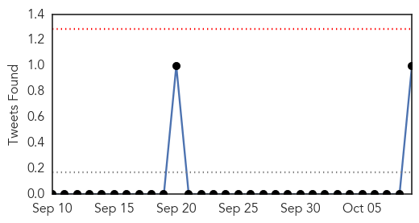
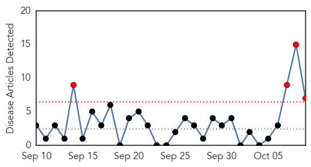
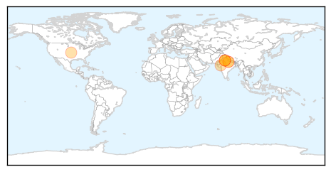

Dengue Fever
30-Day Web Trend
19 alerts, 10 warnings

30-Day Twitter Trend
0 alerts, 0 warnings

Article Locations

Article Confidences

Top Articles:
- 0.990
- Scrub typhus surpasses dengue in Rajasthan's biggest government hospital
- 0.978
- Dengue Epidemics And Strong El Nino Season
- 0.976
- Delhi records 9,438 dengue cases till October 10--Know the symptoms to protect yourself
- 0.949
- With ‘alarming’ increase of cases: LMP–Cebu urges LGUs to act against dengue
- 0.948
- Steps taken to check spread of viral fever in Karur
- 0.948
- More barangays report dengue cases
- 0.939
- Desperate Families in Delhi as Dengue Overwhelms Hospitals
- 0.929
- Number of dengue cases crosses 9,000 mark in Delhi
- 0.928
- Mosquito larvae found in residential colonies
- 0.921
- Dengue doctors at Delhi hospital flocked abroad even as epidemic raged
- 0.892
- Dengue cases in Davao down by half
- 0.868
- Efforts against dengue fever needed over rainy holiday weekend
- 0.832
- Dengue cases to rise in 2016 due to El Niño – DOH
- 0.818
- Fenton Ferguson warns against politicising health
- 0.745
- Prediction Alert: Dengue Epidemic Likely To Be More Severe In South-East Asian Countries In 2016
- 0.684
- Catholic Church and Public Health together against dengue
- 0.640
- Delhi's Dengue Death Toll Hits 30, Total Number of Cases Rise to 9,438
- 0.593
- On alert for dengue fever
- 0.557
- Ensure corporations use grant to fix dengue, govt told
- 0.532
- – World’s Top Doctor Urges ‘Strong’ Paris Climate Deal
Top Tweets:
- 0.877
- Dr Chan: In a given year, WHO manages around 100 outbreaks of familiar diseases, like cholera, dengue, meningitis, and many others
Swine Flu
30-Day Web Trend
4 alerts, 0 warnings

30-Day Twitter Trend
0 alerts, 0 warnings

Article Locations
Article Confidences

Top Articles:
- 0.999
- Delhi doctors vaccinated for swine flu as Capital braces for another health crisis
- 0.999
- 59-year-old dies of swine flu at Safdarjung
- 0.994
- Delhi Prepares for Free, Compulsory Swine Flu Vaccine
- 0.988
- Delhi Health Minister asks health authorities to ensure free vaccination of Swine Flu
- 0.987
- newkerala.com, India Regional News 132428
- 0.984
- Flu shots available later this month
- 0.981
- UP man tests H1N1 positive
Top Tweets:
-
No tweets found for Oct 09, 2015